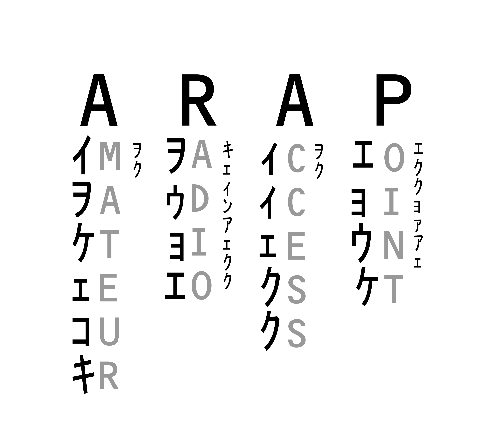

ARAPs allow legacy radios to communicate with Phase 4 Space. ARAPs are repeaters that take legacy signals and convert them to digital uplink signals with the right information for acquisition, authentication, and authorization on Phase 4 Space payload. Find out more here.